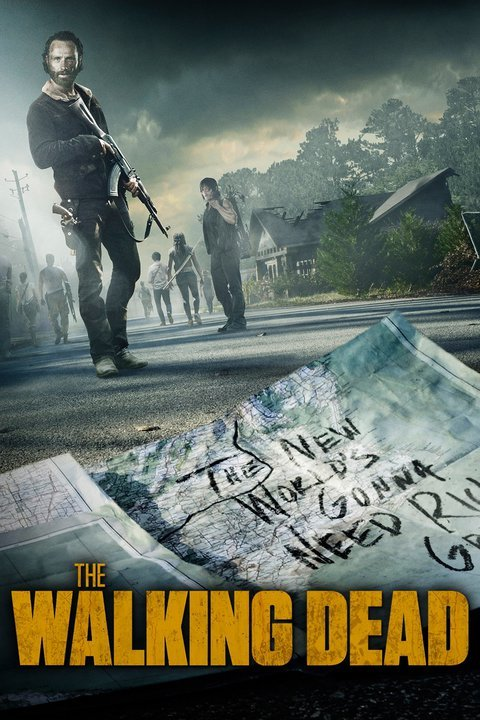

The Walking Dead (Aired 2010-)
Rating: 8.6/10
Age Restriction: TV-14
Sheriff Deputy Rick Grimes wakes up from a coma to a post-apocalyptic world overrun by zombies. After setting out to find his wife and son, he joins and becomes the leader of a group of survivors.
Creator: Frank Darabont
Cast
Andrew Lincoln as .... Rick Grimes
Chandler Riggs as .... Carl Grimes
Norman Reedus as .... Daryl Dixon
Melissa McBride as .... Carol Peletier
Lauren Cohan as .... Maggie Greene
Steven Yeun as .... Glenn Rhee
Danai Gurira as .... Michonne
Sonequa Martin-Green as .... Sasha Williams
Emily Kinney as .... Beth Greene
Alanna Masterson as .... Tara Chambler
Scott Wilson as .... Hershel Greene
Michael Cudlitz as .... Sgt. Abraham Ford
Josh McDermitt as .... Dr. Eugene Porter
Christian Serratos as .... Rosita Espinosa
Sarah Wayne Callies as .... Lori Grimes
Laurie Holden as .... Andrea Harrison
Chad L. Coleman as .... Tyreese Williams
Seth Gilliam as .... Father Gabriel Stokes